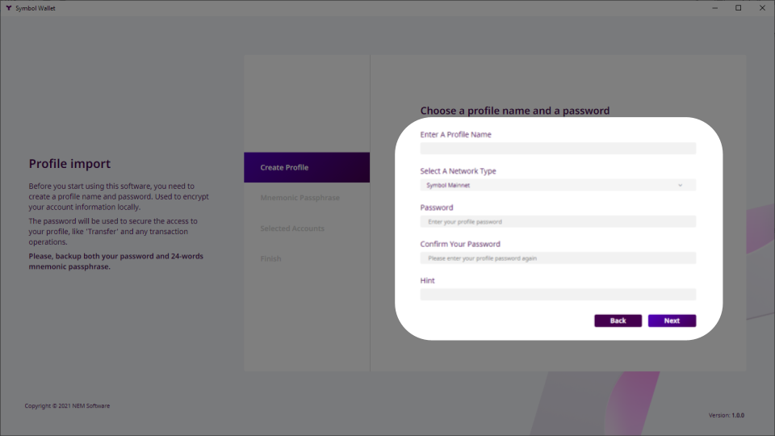
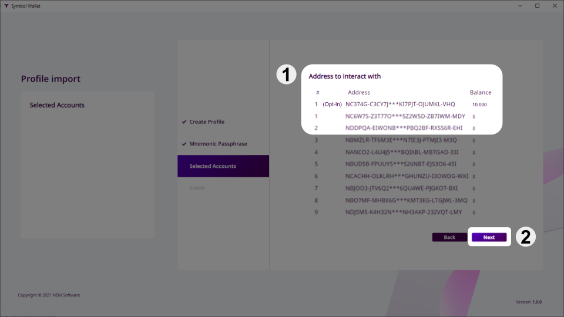

This guide explains how to access the XYM (Symbol’s native currency) you were awarded if you enrolled in the opt-in process BEFORE Symbol launched (March 12, 2021).
If you missed that, you can still opt-in by following the Retrieving your XYM from a post-launch opt-in guide.
NEM NIS1 is the original blockchain offering from NEM, created by the community, and has been running since 2015.
Symbol is the next-generation blockchain from NEM, rewritten from scratch, and launched in March, 2021.
To quickstart Symbol’s adoption, an opt-in process was established which awarded one XYM in the new Symbol blockchain for every XEM (NIS1’s native currency) held in the NIS1 blockchain.

In return, the user received a Symbol Mnemonic, a 24-word phrase which encoded a Symbol account for the future Symbol blockchain.
Here is an example produced by the NEM Wallet containing the Symbol Mnemonic.
Then, on March 12th, 2021 the NIS1 Snapshot took place: When the NIS1 blockchain reached block height 3‘105‘500 a picture was taken of all accounts and their assets.
Finally, on March 16th, 2021 the Symbol blockchain was launched and all opted-in accounts were automatically created:
For every opted-in NIS1 account that held at least 100 XEM at the snapshot, a Symbol account was created holding that same amount of XYM.
This guide explains how to access this new Symbol account and its assets.
Note
If you did not opt-in before the new Symbol blockchain launched, you can still opt-in post-launch by following the Retrieving your XYM from a post-launch opt-in guide.
Download and install the Symbol Desktop Wallet for your platform.
Please note that this is different from the NEM Wallet used to interact with the NIS1 blockchain.
Open the Wallet and click on Create a new profile?:

Click on Import mnemonic:
Fill in some profile data. A profile can contain several Symbol accounts and it helps keeping them organized.
Mainnet Network type.Next.Write every word in the Symbol Mnemonic that you obtained when you opted-in (See the previous section):

Next.On the Selected Accounts screen, you will be presented with the list of accounts that can be derived from the mnemonic, including the one that you opted-in and its balance.
Next.Accept the Terms and Conditions and click on Finish:

The Wallet’s main screen will appear and your opted-in balance will be shown:

Your imported accounts are now ready to use. In the Accounts tab you can see all of them and give them more meaningful names if you want.
Take a look at the rest of the guides to learn what you can do with these accounts. For example, Sending mosaics and messages between two accounts.
Before you go
It is recommended that you move your funds from the opted-in account to the other one you imported in step 6 above (called a Seed account, because it was obtained from a seed Symbol mnemonic).
Accounts opted-in from the NEM Wallet are special and cannot be derived from the mnemonic. Therefore, in the future, if you used a Wallet other than the Symbol Desktop Wallet to recover your account from the mnemonic, it might not recover your opted-in account.
It will recover all other seed accounts, though, and hence the recommendation to move your funds and use only seed accounts.
This is a short list of items to check should you encounter any problem when recovering your opted-in accounts.
Check that the balance on your NIS1 account was at least 100 XEM at the time of the snapshot.
Check that you are using the correct Symbol mnemonic. Did you do several attempts at opting-in and obtained different mnemonics?
Check that your NIS1 account was successfully opted-in by looking up its address in the opt-in Report.
If your account is not on the list, check the other tabs to find the reason.
If you opted-in using the Symbol Mobile Wallet, check that your account is not one of the 35 accounts affected by this known Symbol Mobile Wallet issue.
The NEM Helpdesk can help you if everything else fails:
{kind=link}
{kind=link}
{kind=link}
{kind=link}